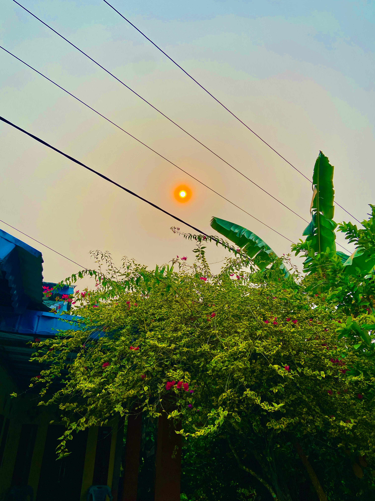

🌾
Pertanian
Lingkungan pertanian menjadi salah satu bagian dari kehidupan dan aktivitas masyarakat desa.
TENTANG DESA
Mengenal lebih dekat karakter, kehidupan, keindahan alam, serta masyarakat Desa Serunai.

Desa Serunai merupakan sebuah desa yang memiliki suasana pedesaan yang asri, sederhana, dan penuh dengan kehidupan masyarakat yang harmonis.
Kehidupan masyarakat tidak terlepas dari lingkungan sekitar. Pepohonan hijau, jalan desa, lahan pertanian, serta aktivitas warga menjadi bagian dari keseharian yang membuat Desa Serunai memiliki karakter tersendiri.
Lingkungan pertanian menjadi salah satu bagian dari kehidupan dan aktivitas masyarakat desa.
Lingkungan yang hijau dan pepohonan memberikan suasana sejuk dan nyaman bagi masyarakat.
Kehidupan masyarakat yang saling mengenal, membantu, dan menjaga kebersamaan.
Gotong royong dan kepedulian menjadi bagian penting dalam kehidupan masyarakat Desa Serunai.